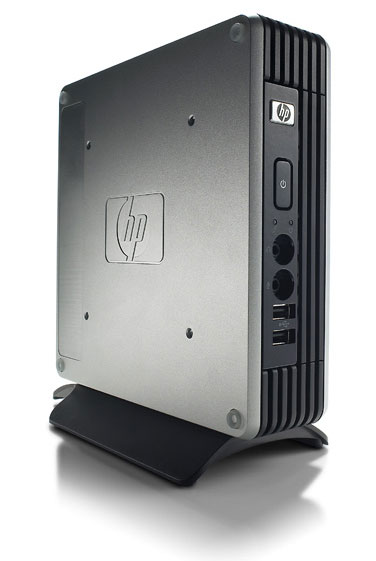

LliureX LTSP es la adaptación del proyecto LTSP (Linux Terminal Server Project) para el soporte de clientes ligeros en el modelo de Aula/Centro LliureX.
LTSP es un servidor de terminales libre y abierto para Linux que permite que varias personas utilicen el mismo ordenador. Las aplicaciones se ejecutan en el servidor con un terminal llamado cliente ligero. Generalmente los clientes ligeros tienen un consumo reducido de energía, no disponen de disco duro y son más silenciosos y fiables que los ordenadores normales (al no tener partes móviles).
De la misma manera, ordenadores que podrían llegar a ser obsoletos se pueden reciclar en clientes ligeros. Extendiendo la vida útil de estos ordenadores también se reducen costes.
Por último, el hecho de que todos los clientes ligeros arranquen la misma imagen reduce drásticamente el mantenimiento de la configuración. Por ejemplo, en lugar de actualizar todos los equipos, sólo actualizamos una imagen que se cargará en todos.
Un servidor LliureX (bien de Aula, bien de Centro o Independiente) debe disponer de una copia (mirror) del repositorio de paquetes de LliureX para su correcto mantenimiento. A partir de dicho repositorio local se pueden generar las imágenes de cualquiera de los sabores de LliureX. Igualmente se pueden actualizar y personalizar (instalar/eliminar programas, editar la configuración del escritorio, etc) dichas imágenes.
Adicionalmente existe la posibilidad de configurar clientes “semi-ligeros” (también llamados “fat clients”, por contraste con “thin client”). Un cliente semi-ligero utiliza la misma imagen generada en el servidor pero con la diferencia de utilizar la CPU y la memoria RAM del equipo cliente. De esta manera, los equipos cliente que tengan la potencia suficiente podrán descargar de trabajo (uso de recursos) al servidor.
Otra opción interesante es la posibilidad de realizar la instalación de equipos cliente (tradicionales) por red. Aunque esta funcionalidad no es propia de LTSP, se ha aprovechado la infraestructura necesaria para LTSP (repositorio local) y ofrecer la instalación por red vía la interfaz de gestión de LliureX LTSP. Dependiendo de la capacidad de la red del aula (o del centro) se podrán realizar más (o menos) instalaciones simultáneas de clientes. Esta utilidad ayuda a reducir el tiempo de instalación total.
Según la documentación del proyecto LTSP y de Ubuntu, los requisitos mínimos en el servidor son:
En el cliente:
Los conceptos principales a tener en cuenta son:
Nota
Un chroot es básicamente un directorio especial de tu ordenador que evita que las aplicaciones puedan acceder a ficheros de fuera de ese directorio. En muchos sentidos, un chroot es como instalar un sistema operativo dentro del sistema operativo existente. Más información en: http://help.ubuntu.com/community/BasicChroot
LliureX LTSP se introduce en la versión 13.06 (Pandora) motivado por varias razones:

{kind=link}
{kind=link}